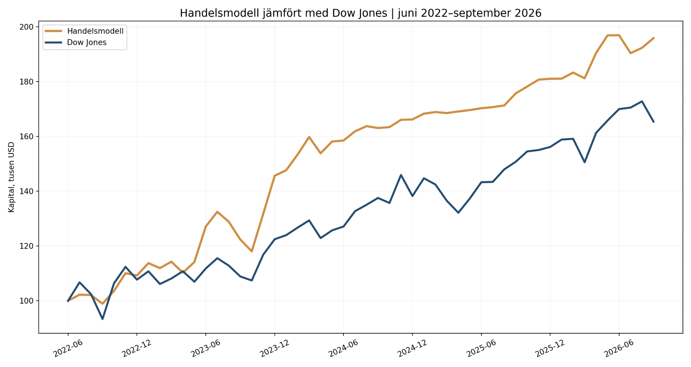

Bortom
aktiemarknaden
Sedan 2019 har AlgoLodge erbjudit ett alternativ till traditionella investeringar genom systematiska handelsstrategier. Modellernas främsta syfte är inte att maximera avkastningen, utan att komplettera traditionella investeringar, bidra till en mer diversifierad portfölj och minska beroendet av aktiemarknadens utveckling.
Resultaten som presenteras på sajten bygger på verklig handel med riktigt kapital, inte på historiska simuleringar eller teoretiska modeller.
Handelsmodell mot Dow Jones
Juni 2022 – september 2026

Historiska resultat är ingen garanti för framtida avkastning. Dow Jones avser prisindex utan utdelningar. Jämförelsen förutsätter att modellens månadsbelopp är jämförbara kontovärden utan externa kapitalflöden.
Exponering utanför traditionella aktieportföljer.
Regelstyrda strategier, inte börsprognoser.
Utformade för att bredda portföljens möjligheter.
Ett komplement till aktier.
Inte ännu en aktieportfölj.
Traditionella portföljer är ofta starkt beroende av stigande aktiemarknader. Systematisk handel kan söka möjligheter på andra marknader och anpassa positionerna när förutsättningarna förändras. Syftet är att bredda diversifieringen – inte att utlova skydd eller positiv avkastning när börsen faller.
Välj din marknad.
Följ en systematisk metod.
Sex utvalda strategier inom två marknadsgrupper. Varje strategi följer en definierad handelsmetod. Verifierade resultatrapporter publiceras när de finns tillgängliga.
Kryptostrategier
Systematiska metoder för digitala tillgångar
Råvarustrategier
Systematiska metoder för globala råvarumarknader
Ytterligare program kan finnas via DupliTrade. Vissa ses över och kan ändras eller återlanseras. Kontrollera tillgänglighet och villkor med leverantören.
Resultat som kan
be examined.
Målet är att publicera detaljerad historik med års- och månadsavkastning, nedgångar från tidigare toppar och nedladdningsbara Excel-filer. Vi skiljer tydligt mellan verklig och simulerad handel och förklarar CFD-kostnader och skillnader i orderutförande.
Visa historiska strategirapporter →
Se historiska månatliga kontovärden. Dessa har ännu inte verifierats som resultat från verklig CFD-handel.
En tydlig väg från
strategi till handel.
AlgoLodge utvecklar strategier. Behöriga kunder kan använda CFD-kopieringshandel via externa leverantörer. Kundernas medel finns hos mäklaren, inte hos AlgoLodge.
Läs hela steg-för-steg-guiden →
Behörighet, DupliTrade-tillgång, kapitalkrav och tillstånd för marknadsföring varierar mellan länder. Kontrollera villkoren direkt med AvaTrade och DupliTrade före kontoöppning.
Enskilda strategier.
En bredare filosofi.
AlgoLodge fokuserar på utvalda handelsmetoder och marknader. Arkad, det bredare Managed Futures-programmet hos Hallenborg CTA, kombinerar flera metoder i en diversifierad struktur. Instrument, exekvering, konton och risker kan skilja sig åt.
Upptäck Hallenborg CTA ↗Henrik
Hallenborg.
Systematisk handel, disciplinerad exekvering och ett långsiktigt fokus på risk.
AlgoLodge presenterar strategier utvecklade av Henrik Hallenborg, CTA och systematisk trader. Webbplatsen förklarar handelsmetoderna, ger transparent information och visar hur CFD-kopieringshandel via externa leverantörer kan fungera.
Learn more about Hallenborg CTA ↗CFDs are complex leveraged products and carry a high risk of losing money rapidly. Copy trading does not eliminate risk. Past performance is not a reliable indicator of future results. Broker eligibility, regulatory protections, and availability differ by jurisdiction. This website is informational and does not constitute individualized investment advice or an offer where prohibited.